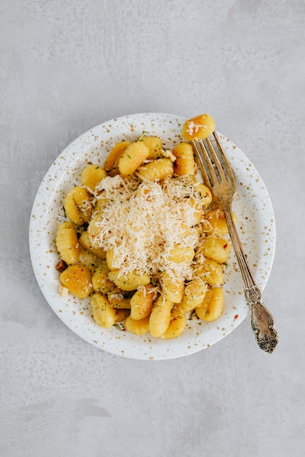

<h1>Gnocchi</h1>

<h2>Description</h2>
<p>A simple, but delicious, Gnocchi</p>
<h2>Ingredients</h2>
<ul>
    <li>Patatoes</li>
    <li>Flour</li>
    <li>Egg</li>
</ul>
<h2>Steps</h2>
<ol>
    <li>Boil and mash the potatoes.</li>
    <li>Combine the igredients, the knead into a ball.</li>
    <li>Shape the dough into "snakes".</li>
    <li>Cut the snakes into pieces.</li>
    <li>Boil and drain the gnocchi.</li>
</ol>